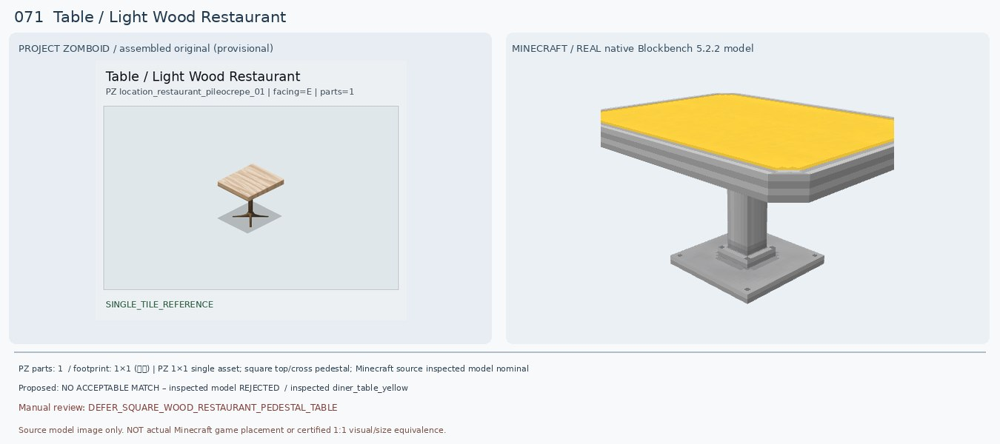
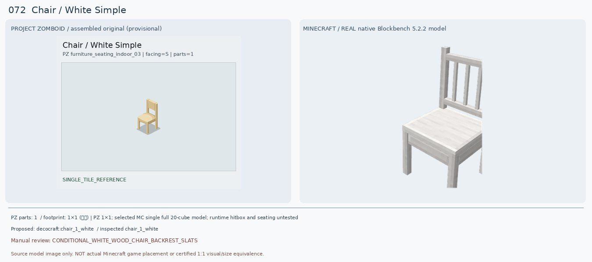
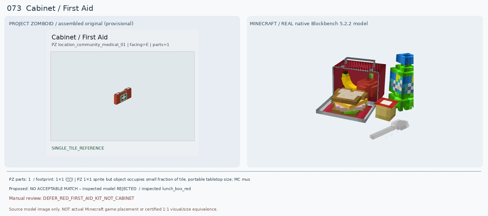
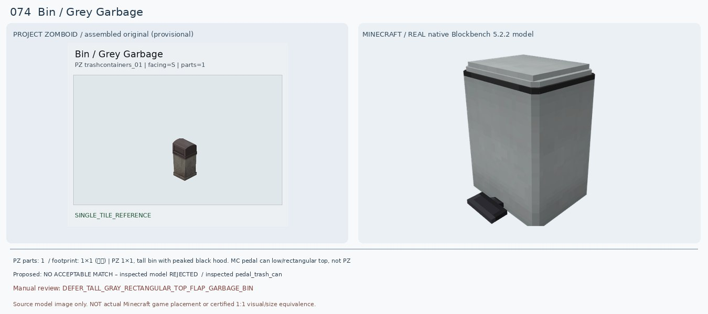
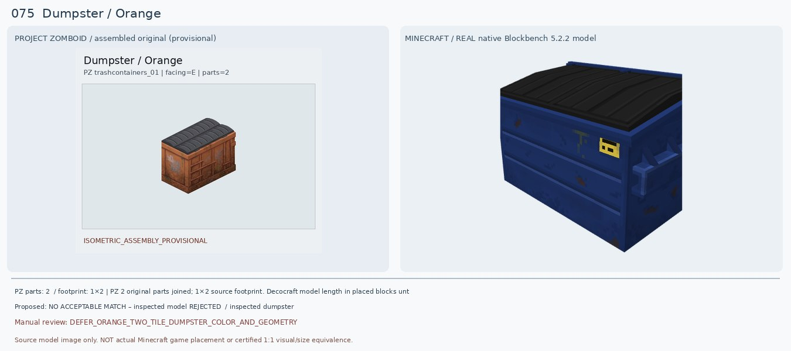
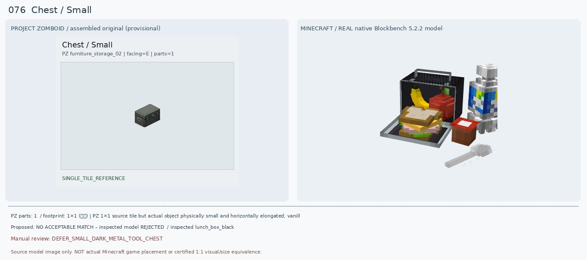
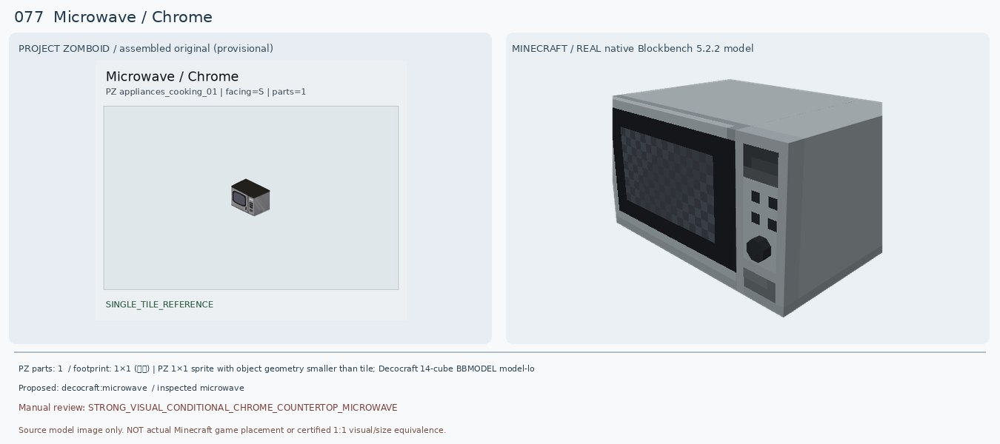
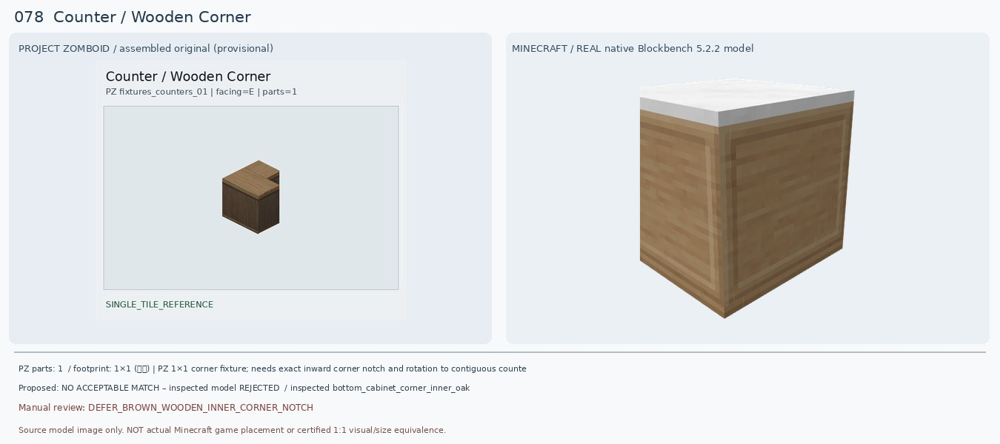
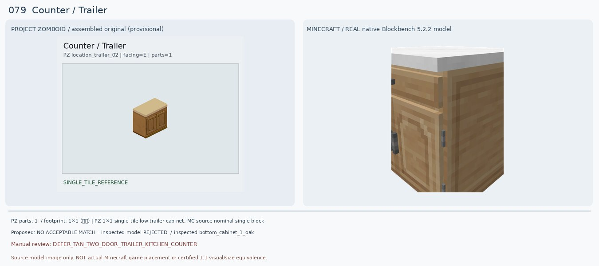
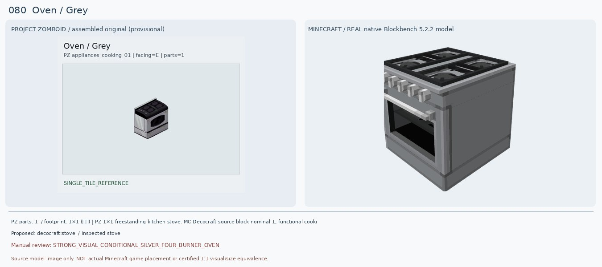

Table / Light Wood Restaurant
검수: DEFER_SQUARE_WOOD_RESTAURANT_PEDESTAL_TABLE
실제 선정 후보: 없음 — 후속 검토
실제로 렌더해 비교한 모델: decocraft:diner_table_yellow
다른 후보: decocraft:diner_table_light_gray; Furnitury small restaurant pedestal wooden table (unverified)
크기: PZ 1×1 single asset; square top/cross pedestal; Minecraft source inspected model nominal single block, height untested
원본 외형: Light beige wood near-square single tabletop, brown thin central post, four short brown cross feet; compact high cafe bistro table
판정 이유: PZ 원본은 밝은 원목 정사각 상판에 갈색 가는 한 기둥과 십자 다리의 카페용 탁자다. 기존 Macaw glass table은 상판 평판 한 조각만 나타나 전혀 검증되지 않는다. 실제 Decocraft Diner Table Yellow/Light Gray는 정사각 상판과 중앙 기둥은 비슷하지만 상판이 노란 플라스틱/회색 금속이고, 넓은 사각 금속 바닥판이라 원본의 나무색/십자 발과 구조가 다르다. Round variant는 상판이 원형으로 더 어긋난다.
다음 조치: 1.20.1 Forge 카페용 'square light-wood pedestal table with cross feet' 완성 모델 검색; vanilla spruce fence+birch trapdoor는 배치·높이·충돌 확인 후만 후보.
PZ 원본 메타데이터
{"BlocksPlacement": [""], "CanBreak": [""], "CanScrap": [""], "CustomName": ["Table"], "Facing": ["E"], "GroupName": ["Light Wood Restaurant"], "IsLow": [""], "IsMoveAble": [""], "IsTable": [""], "Material": ["Wood"], "PickUpTool": ["Hammer"], "PickUpWeight": ["50"], "PlaceTool": ["Hammer"], "Surface": ["32"], "solidtrans": [""]}
Chair / White Simple
검수: CONDITIONAL_WHITE_WOOD_CHAIR_BACKREST_SLATS
실제 선정 후보: decocraft:chair_1_white
실제로 렌더해 비교한 모델: decocraft:chair_1_white
다른 후보: decocraft:chair_2_white [X-shaped back rejected]
크기: PZ 1×1; selected MC single full 20-cube model; runtime hitbox and seating untested
원본 외형: Ivory/cream painted compact wooden dining chair, solid pale seat and four straight slim legs; simple low back with one large rectangular opening, no armrest
판정 이유: PZ는 연한 크림색의 얇은 네 다리 목제 의자로 등받이에 하나의 넓은 사각 틈이 있다. 기존 PFM Oak Chair Classic White는 다리 몇 개와 붉은 막대만 나온 불완전 모델이다. 새 Decocraft Chair 1 White를 직접 렌더해 흰 목제 4다리·좌석·등받이가 모두 구현된 것을 확인했다. 다만 등받이에 세로살 여러 개가 있어 PZ의 단일 큰 사각 틈과 다르며 화이트 색감도 더 밝다. Chair 2 White는 X자라 더 멀다.
다음 조치: 더 단순한 크림색 사각 뚫린 등받이 모델 확인, 1×1 설치/착석 기능 검증.
PZ 원본 메타데이터
{"BedType": ["badBed"], "BlocksPlacement": [""], "CanScrap": [""], "CustomName": ["Chair"], "Facing": ["S"], "GroupName": ["White Simple"], "IsLow": [""], "IsMoveAble": [""], "Material": ["Wood"], "Material2": ["Nails"], "MaterialType": ["Wood"], "PickUpWeight": ["75"], "ScrapSize": ["Small"], "SeatMaterial": ["Wooden"], "Surface": ["17"], "bed": [""]}
Cabinet / First Aid
검수: DEFER_RED_FIRST_AID_KIT_NOT_CABINET
실제 선정 후보: 없음 — 후속 검토
실제로 렌더해 비교한 모델: decocraft:lunch_box_red
다른 후보: Hospitals - Medical Blocks & Items 1.20.1 Forge: Small/Large First Aid Kit (not native-rendered); Server meds kit item only
크기: PZ 1×1 sprite but object occupies small fraction of tile, portable tabletop size; MC must be small not full block
원본 외형: Small portable bright red first aid hard case, top handle, green square/white medical cross front sticker, silver clasps; not wall cabinet
판정 이유: PZ는 빨간 사각 휴대용 구급상자에 위 손잡이, 녹색 바탕 흰 십자가 표지, 잠금쇠가 있다. 이전 Macaw Double Kitchen Cabinet은 큰 주방 수납장이어서 가구 종류 자체가 틀리다. 새 Decocraft Lunch Box Red BBMODEL도 열어 보니 음식/음료를 펼쳐 놓은 도시락 장면이라 구급상자와 전혀 다른 물건이다. Hospitals Forge 1.20.1에는 Small/Large First Aid Kit가 있지만 모델·블록 설치 가능 여부를 아직 렌더링하지 않아 매칭 확정 불가.
다음 조치: https://modrinth.com/mod/hospitals Forge 1.20.1 JAR의 small_first_aid_kit/large_first_aid_kit 모델·크기·십자 표식·실제 배치 가능 여부 확인. 단순 인벤토리 아이템은 가구 블록 치환 승인 금지.
PZ 원본 메타데이터
{"CanBreak": [""], "CanScrap": [""], "ContainerCapacity": ["10"], "ContainerPosition": ["High"], "CustomName": ["Cabinet"], "Facing": ["E"], "GroupName": ["First Aid"], "IsHigh": [""], "IsMoveAble": [""], "Material": ["Wood"], "Material2": ["Mirror"], "MoveType": ["WallObject"], "PickUpWeight": ["100"], "ScrapSize": ["Small"], "Surface": ["80"], "attachedN": [""], "container": ["medicine"]}
Bin / Grey Garbage
검수: DEFER_TALL_GRAY_RECTANGULAR_TOP_FLAP_GARBAGE_BIN
실제 선정 후보: 없음 — 후속 검토
실제로 렌더해 비교한 모델: decocraft:pedal_trash_can
다른 후보: decocraft:trash_can [cylindrical corrugated round lidded can, also wrong]
크기: PZ 1×1, tall bin with peaked black hood. MC pedal can low/rectangular top, not PZ
원본 외형: Tall narrow grey square metal street trash bin, darker black/deep-grey pitched/hooded top with front hinged swing opening, lower body soiled metal
판정 이유: PZ는 키 큰 회색 각형 쓰레기통이고 위는 짙은 회흑색 경사진 돔형/투입구 덮개다. 기존 Refurbished Recycle Bin은 하얀 상판+세로 홈의 낮은 통형 블록 일부만 보였다. 실제 Decocraft Pedal Trash Can 모델은 회색 네모 통이지만 윗면이 평평하고 바닥 페달이 노출되며 검정 높다란 쓰레기통 덮개가 없다. Decocraft Trash Can은 손잡이 원통형이라 더 다르다.
다음 조치: black hood/top-flap gray outdoor rectangular trash receptacle 1.20.1 Forge actual model search; vanilla gray block/trapdoor stack would need 1×1 collision placement check.
PZ 원본 메타데이터
{"BlocksPlacement": [""], "CanScrap": [""], "ContainerCapacity": ["10"], "ContainerCloseSound": ["BinPlasticCoverClose"], "ContainerOpenSound": ["BinPlasticCoverOpen"], "ContainerPutSound": ["BinPlasticCoverTransferItem"], "ContainerTakeSound": ["BinPlasticCoverTransferItem"], "CustomName": ["Bin"], "Facing": ["S"], "GroupName": ["Grey Garbage"], "IsLow": [""], "IsMoveAble": [""], "IsTrashCan": [""], "Material": ["MetalScrap"], "Material2": ["PlasticBag"], "MaterialType": ["Plastic"], "PickUpWeight": ["50"], "container": ["bin"], "solidtrans": [""]}
Dumpster / Orange
검수: DEFER_ORANGE_TWO_TILE_DUMPSTER_COLOR_AND_GEOMETRY
실제 선정 후보: 없음 — 후속 검토
실제로 렌더해 비교한 모델: decocraft:dumpster
다른 후보: decocraft:dumpster [blue-only actual textured variant; same dumpster class but color and industrial wear mismatch]
크기: PZ 2 original parts joined; 1×2 source footprint. Decocraft model length in placed blocks untested
원본 외형: Long rusty orange/brown outdoor commercial dumpster across two original PZ tiles, thick black two-part curved corrugated hinged lids, steel exterior with rusty streaks/rectangular panels
판정 이유: 원본은 2타일 길이의 녹슨 주황색 대형 쓰레기통과 검정 굽은 이중 뚜껑이다. Decocraft Dumpster는 실제 BBMODEL 40큐브로 대형 몸체·검정 뚜껑이 존재하여 종류/전체 비율은 비슷하지만 실제 게임용 원본 텍스처는 파란색이고 뚜껑도 검정 평판 하나처럼 보인다. 주황색 변형이나 2블록 설치 규칙은 검증되지 않았으므로 배색과 크기를 인정하지 않고 보류한다. 새 조합 텍스처를 직접 만들어 재배포하지 않는다.
다음 조치: Minecraft Forge 1.20.1에 실제 'orange/rusty dumpster' 배색 variant 있는지 설치 가능한 블록/모델 추가 검색. Decocraft 색상 커스터마이즈 가능성도 원본 레지스트리에서 확인; 두 타일 연결 여부 필수.
PZ 원본 메타데이터
{"BlocksPlacement": [""], "CanScrap": [""], "ContainerCapacity": ["30"], "ContainerCloseSound": ["BinDumpsterClose"], "ContainerOpenSound": ["BinDumpsterOpen"], "ContainerPutSound": ["BinDumpsterTransferItem"], "ContainerTakeSound": ["BinDumpsterTransferItem"], "CustomName": ["Dumpster"], "Facing": ["E"], "GroupName": ["Orange"], "IsMoveAble": [""], "IsTrashCan": [""], "Material": ["MetalPlates"], "Material2": ["MetalPlates"], "Material3": ["MetalScrap"], "MaterialType": ["Metal_Large"], "PickUpLevel": ["2"], "PickUpTool": ["Crowbar"], "PickUpWeight": ["300"], "SnowTile": ["object_snow_overlay_01_156", "object_snow_overlay_01_157"], "SpriteGridPos": ["0,0", "0,1"], "Surface": ["46"], "container": ["dumpster"], "solid": [""]}
Chest / Small
검수: DEFER_SMALL_DARK_METAL_TOOL_CHEST
실제 선정 후보: 없음 — 후속 검토
실제로 렌더해 비교한 모델: decocraft:lunch_box_black
다른 후보: Iron Chests Forge 1.20.1 iron chest; model and dark industrial portable toolbox shape not verified
크기: PZ 1×1 source tile but actual object physically small and horizontally elongated; vanilla single chest differs in wood material
원본 외형: Compact dark charcoal rectangular portable steel storage/tool chest with hinged flat lid, metal side pull handles, slim bright latch/lock at front; horizontally longer than tall
판정 이유: PZ 원본은 손잡이와 잠금쇠가 있는 어두운 철제 소형 장방형 보관상자다. 기존 매칭은 실제 모델이 없는 상태였다. 새 Decocraft Lunch Box Black/Gray 역시 실제로는 도시락을 펼쳐 놓고 샌드위치·과자·음료가 바닥에 놓인 모양이므로 단순 금속 상자로 사용할 수 없다. 1.20.1 Forge Iron Chests에는 철제 보관함이 있지만 거기엔 이 원본과 같은 작은 휴대형 2:1 길이/양옆 손잡이가 있는지는 미확인.
다음 조치: https://modrinth.com/mod/iron-chests 실제 Iron Chest model source and a dedicated metal tool box/case mod, dark gray horizontal chest with side handles & latch model verify.
PZ 원본 메타데이터
{"BlocksPlacement": [""], "CanScrap": [""], "ContainerCapacity": ["10"], "ContainerCloseSound": ["ChestMetalClose"], "ContainerOpenSound": ["ChestMetalOpen"], "ContainerPosition": ["Low"], "ContainerPutSound": ["ChestMetalTransferItem"], "ContainerTakeSound": ["ChestMetalTransferItem"], "CustomName": ["Chest"], "Facing": ["E"], "FitsBeneathCountertop": [""], "GroupName": ["Small"], "IsLow": [""], "IsMoveAble": [""], "IsTableTop": [""], "Material": ["MetalScrap"], "PickUpWeight": ["30"], "ScrapSize": ["Small"], "Surface": ["18"], "container": ["locker"]}
Microwave / Chrome
검수: STRONG_VISUAL_CONDITIONAL_CHROME_COUNTERTOP_MICROWAVE
실제 선정 후보: decocraft:microwave
실제로 렌더해 비교한 모델: decocraft:microwave
다른 후보: pfm:iron_microwave [previous 3D render had detached/incorrect elements]
크기: PZ 1×1 sprite with object geometry smaller than tile; Decocraft 14-cube BBMODEL model-local extents require placed-unit verification
원본 외형: Small rectangular silver microwave with BLACK top, front dark window with light border and right-side vertical controls; short countertop appliance
판정 이유: PZ는 검은 상판, 은회색 금속 본체, 왼쪽 어두운 창/사각 테두리, 오른쪽 버튼과 손잡이가 있는 전자레인지다. 기존 PFM Iron Microwave 렌더는 이상한 보라색 그림/분리된 큰 평판 때문에 완성형으로 볼 수 없다. 새 Decocraft Microwave는 실제 14큐브 원본 모델과 원본 텍스처를 모두 로드하여 앞 유리창·오른쪽 버튼·금속 하우징이 한 덩어리로 확인됨. 다만 MC 윗면은 밝은 회색이고 전면 조절부 비율이 다르며 게임 내 조리 기능은 검증되지 않았다.
다음 조치: 검정 상판/은색 몸체를 가진 전자레인지 추가 variant 비교, 한 블록 안에서 카운터 위 설치와 요리/음식 데우기 기능 검증.
PZ 원본 메타데이터
{"BlocksPlacement": [""], "CanScrap": [""], "ContainerCapacity": ["5"], "ContainerCloseSound": ["MicrowaveDoorClose"], "ContainerOpenSound": ["MicrowaveDoorOpen"], "ContainerPutSound": ["MicrowaveTransferItem"], "ContainerTakeSound": ["MicrowaveTransferItem"], "CustomName": ["Microwave"], "Facing": ["S"], "GroupName": ["Chrome"], "IsMoveAble": [""], "IsSurfaceOffset": [""], "IsTableTop": [""], "IsoType": ["IsoStove"], "ItemHeight": ["15"], "LightRadius": ["1"], "Material": ["MetalScrap"], "Material2": ["Electric"], "MaterialType": ["Metal_Light"], "Microwave": [""], "PickUpWeight": ["100"], "ScrapSize": ["Small"], "Surface": ["34"], "attachedSurface": [""], "container": ["microwave"], "lightB": ["60"], "lightG": ["80"], "lightR": ["80"], "solidtrans": [""]}
Counter / Wooden Corner
검수: DEFER_BROWN_WOODEN_INNER_CORNER_NOTCH
실제 선정 후보: 없음 — 후속 검토
실제로 렌더해 비교한 모델: decocraft:bottom_cabinet_corner_inner_oak
다른 후보: decocraft:bottom_cabinet_corner_outer_1_oak / outer_2_oak (top white; right-angle notch not evidenced)
크기: PZ 1×1 corner fixture; needs exact inward corner notch and rotation to contiguous counters. MC color/shape unconfirmed
원본 외형: Dark brown wood square kitchen counter with brown/tan oak plank top and visible deep right-angle INWARD L cut-out in back/right, near-vertical plain front/side panels
판정 이유: PZ는 전체 갈색 나무로 된 카운터에 안쪽 직각으로 도려낸 L자 코너 홈이 있다. 기존 Decocraft Diner Counter Corner Black은 검정/흰색 줄무늬 금속·45도 절단 바닥이라 종류가 틀리다. 새 Decocraft Bottom Cabinet Corner Inner Oak는 목재 몸체로 개선되지만 흰색 상판이고 렌더에 PZ 같은 안쪽 직각 홈이 확인되지 않는다. Outer 1/2 모델도 흰 상판/문 패널과 일부 보이지 않는 면 때문에 코너의 정확한 맞물림을 확인할 수 없다.
다음 조치: PZ 1×1 L 내향 코너 실좌표와 방향 매칭, Decocraft Corner Inner Oak를 상부·모델 전체 회전해 노치가 있는지 검증. 주방 가구 모드 brown-on-brown countertop variant 검색.
PZ 원본 메타데이터
{"BlocksPlacement": [""], "CanBreak": [""], "CanScrap": [""], "ContainerPosition": ["Low"], "ContainerPutSound": ["DoorWoodMediumTransferItem"], "ContainerTakeSound": ["DoorWoodMediumTransferItem"], "CountertopAttach": [""], "CustomName": ["Counter"], "Facing": ["E"], "GenericCraftingSurface": ["true"], "GroupName": ["Wooden Corner"], "IsLow": [""], "IsMoveAble": [""], "IsTable": [""], "Material": ["Wood"], "Material2": ["Nails"], "PickUpLevel": ["2"], "PickUpTool": ["Hammer"], "PickUpWeight": ["100"], "PlaceTool": ["Hammer"], "Surface": ["35"], "container": ["counter"], "solidtrans": [""]}
Counter / Trailer
검수: DEFER_TAN_TWO_DOOR_TRAILER_KITCHEN_COUNTER
실제 선정 후보: 없음 — 후속 검토
실제로 렌더해 비교한 모델: decocraft:bottom_cabinet_1_oak
다른 후보: decocraft:bottom_cabinet_island_oak (still white top, single door and drawer)
크기: PZ 1×1 single-tile low trailer cabinet, MC source nominal single block
원본 외형: Small light tan/pine plywood trailer lower kitchen counter with rectangular plain beige top and TWO inset front cabinet doors with separate small round knobs; no top drawer
판정 이유: PZ는 밝은 나무톤 본체와 연베이지 상판을 가진 전면 양문형 하부장이다. 기존 Macaw Acacia Counter는 검은·붉은 큰 블록처럼 렌더되어 문 두 개가 전혀 확인되지 않는다. 새 Decocraft Bottom Cabinet 1 Oak는 색감은 근접하지만 위 서랍 1개+아래 문 1개이고 흰색 상판이라 원본의 두 문·베이지 상판과 다르다. Island Oak도 동일한 문제. 장치의 문 구조가 핵심이므로 승인하지 않는다.
다음 조치: Wooden two-door 1×1 lower kitchen cabinet with beige worktop, 1.20.1 Forge Furnection/Skniro’s/Handcrafted models compare. Vanilla barrel under light brown slab can approximate color only and requires game placement validation.
PZ 원본 메타데이터
{"BlocksPlacement": [""], "CanBreak": [""], "CanScrap": [""], "ContainerCloseSound": ["DoorWoodMediumClose"], "ContainerOpenSound": ["DoorWoodMediumOpen"], "ContainerPosition": ["Low"], "ContainerPutSound": ["DoorWoodMediumTransferItem"], "ContainerTakeSound": ["DoorWoodMediumTransferItem"], "CountertopAttach": [""], "CustomName": ["Counter"], "Facing": ["E"], "GenericCraftingSurface": ["true"], "GroupName": ["Trailer"], "IsLow": [""], "IsMoveAble": [""], "IsTable": [""], "Material": ["Wood"], "PickUpLevel": ["2"], "PickUpTool": ["Hammer"], "PickUpWeight": ["100"], "PlaceTool": ["Hammer"], "ScrapSize": ["Small"], "Surface": ["34"], "container": ["counter"], "solidtrans": [""]}
Oven / Grey
검수: STRONG_VISUAL_CONDITIONAL_SILVER_FOUR_BURNER_OVEN
실제 선정 후보: decocraft:stove
실제로 렌더해 비교한 모델: decocraft:stove
다른 후보: pfm:gray_stove [old incomplete line-only render]; decocraft:pizza_oven [wrong brick design]
크기: PZ 1×1 freestanding kitchen stove. MC Decocraft source block nominal 1; functional cooking and game geometry not verified
원본 외형: Gray silver freestanding electrical range: four dark circular stovetop burners, thin rear metal backsplash, black rounded rectangular glass oven window and door front
판정 이유: PZ는 회색 은색 몸체, 검정 상판 위 둥근 화구 4개, 뒤쪽 금속 튐방지판, 검정 유리 오븐문을 가진다. 기존 PFM Gray Stove는 길쭉한 막대 1개만 나와 오븐이 아니었다. 새 Decocraft Stove 실제 98큐브 모델은 전체 은회색 바디, 사각격자형 검정 화구 4개, 전면 조절 노브, 검정 유리 오븐창으로 외형과 종류가 상당히 비슷하다. 하지만 PZ의 동그란 화구 모양·높은 백스플래시·오븐창 곡률은 다르다.
다음 조치: 버너 원형/사각 차이 확인, MC 실제 레시피/조리·방향별 설치·1×1 충돌 검증.
PZ 원본 메타데이터
{"BlocksPlacement": [""], "CanScrap": [""], "ContainerCapacity": ["15"], "ContainerCloseSound": ["StoveDoorClose"], "ContainerOpenSound": ["StoveDoorOpen"], "ContainerPosition": ["Low"], "ContainerPutSound": ["StoveTransferItem"], "ContainerTakeSound": ["StoveTransferItem"], "CustomName": ["Oven"], "Facing": ["E"], "GroupName": ["Grey"], "IsLow": [""], "IsMoveAble": [""], "IsoType": ["IsoStove"], "Material": ["Fridge"], "Material2": ["Electric"], "Material3": ["MetalScrap"], "MaterialType": ["Metal"], "PickUpLevel": ["3"], "PickUpTool": ["Electrician"], "PickUpWeight": ["200"], "PlaceTool": ["Electrician"], "Surface": ["34"], "container": ["stove"], "solidtrans": [""]}